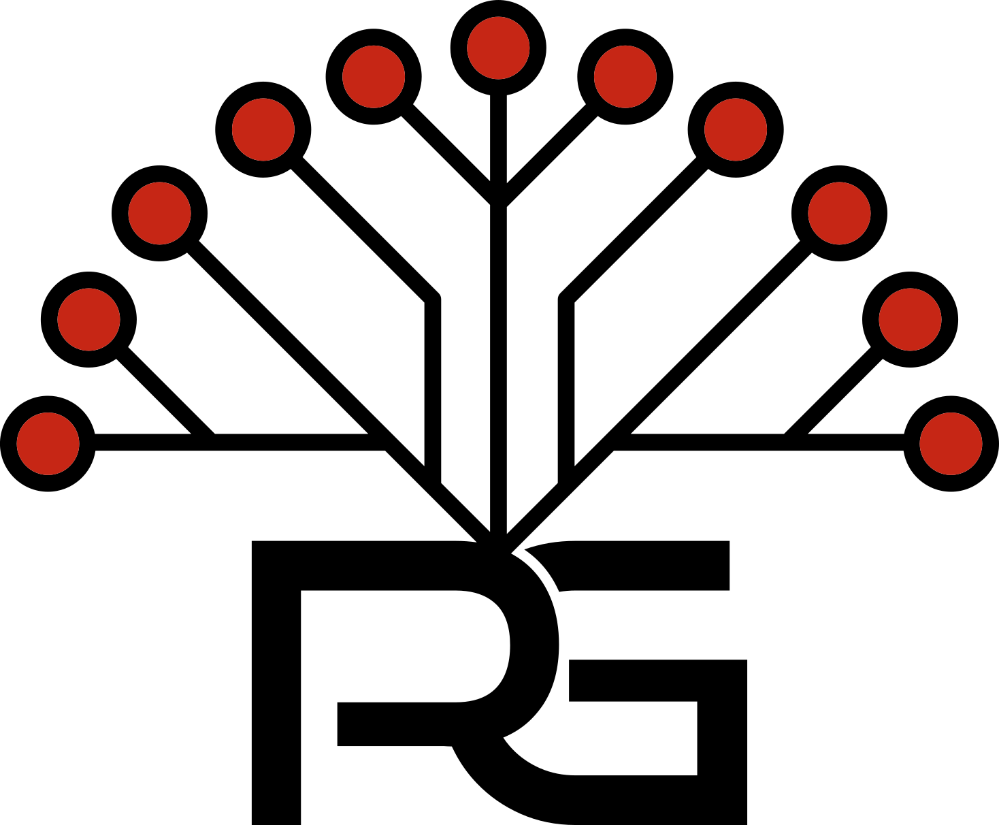
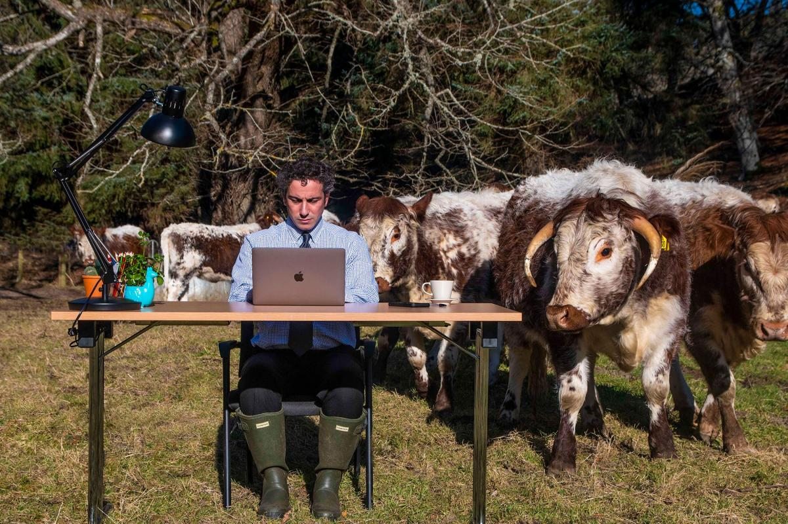

Azure Infrastructure
Design, deployment, migration and support across Azure compute, networking, storage, identity, Key Vault, Front Door and production cloud services.
Rowan Grove provides hands-on Azure and DevOps engineering on a fractional, project or contract basis — helping teams build, automate, troubleshoot and operate reliable Microsoft cloud infrastructure.

From production operations and infrastructure delivery to automation and cloud modernisation, Rowan Grove can add experienced engineering capacity without the commitment of a permanent hire.
Design, deployment, migration and support across Azure compute, networking, storage, identity, Key Vault, Front Door and production cloud services.
Azure DevOps pipelines, release automation, deployment workflows and practical improvements that make application and infrastructure delivery repeatable.
Terraform and ARM-based provisioning, repeatable environments, configuration standardisation and automation of manual infrastructure processes.
Custom PowerShell, REST API integrations and operational automation to remove repetitive work, reduce errors and connect systems.
Production troubleshooting, monitoring, KQL, alerting, certificates, DNS, platform maintenance and the difficult operational work that keeps services healthy.
Entra ID, SSO, SAML, ADFS, Okta and Microsoft 365 administration, migration and integration alongside wider Microsoft infrastructure.
Ideal for organisations that have real cloud engineering work to deliver but don't need — or don't want — another permanent engineer.
A day or two per week, a few days per month, or another agreed cadence. Useful for teams that need ongoing senior Azure/DevOps input without a full-time role.
Bring Rowan Grove in for a migration, automation initiative, infrastructure build, technical improvement or other clearly scoped piece of work.
Remote B2B engineering support for delivery peaks, specialist requirements and temporary gaps in cloud or infrastructure capability.
Rowan Grove is led by an Azure and DevOps engineer with 8+ years' experience across cloud, infrastructure and DevOps-aligned roles. The focus is practical delivery: understanding the problem, working with engineering teams and leaving behind reliable, supportable solutions.
“Rowan Grove manage our email and cloud systems, we couldn’t be happier with the service we receive, it saves us the cost of hiring dedicated IT staff”— North Build Leeds
The business started by supporting organisations in rural North Yorkshire, and that capability remains available alongside the cloud consultancy work. Local projects are taken on selectively where Rowan Grove can add meaningful value.

“Rowan Grove installed & configured a new Wi-Fi Mesh network for us, which completely changed how we are able to provide internet for our guests & provides us with the security we needed for peace of mind — highly recommended.”— NECS Homes Ltd
Fractional, project and contract enquiries are welcome from organisations across the UK.